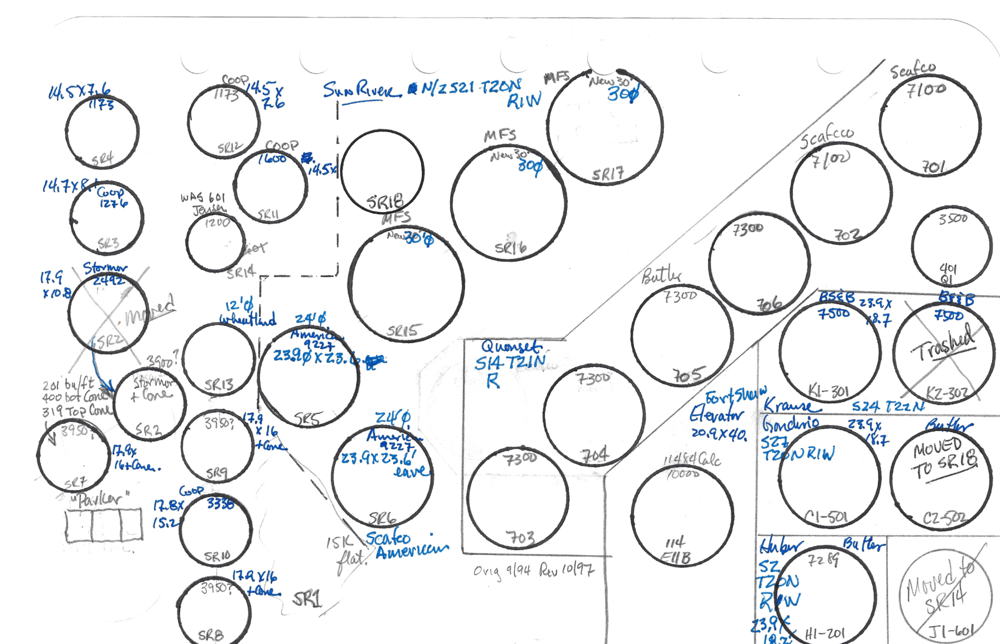

Sun River Grain Storage Site
Click any bin to load real-time status & sensor history

SR4
SR3
SR2
SR7
SR13
SR9
SR8
SR5
SR6
SR18
SR17
SR16
SR15
703
704
701
702
706
705
PKRW
PKRM
PKRE
Bin Details
×
Crop / Year
--
Farm Unit
--
Practice
--
Protein / Quality
--
Current Volume
--
CO₂ Level
--
Last Reading
--
BIN HARDWARE SPECS
Brand / Model
--
Diameter / Circ.
--
Bu / Foot
--
Eave Ht / Rings
--
Cone Vol (Bu)
--
Bot Cone Corrugations
--
Cable Temp History (°F)
CO₂ Trend (PPM)